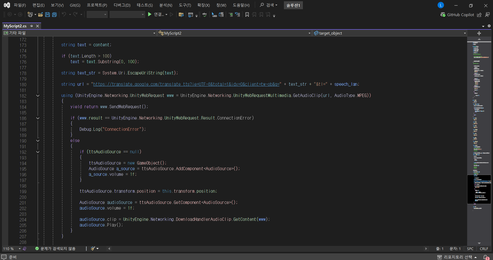
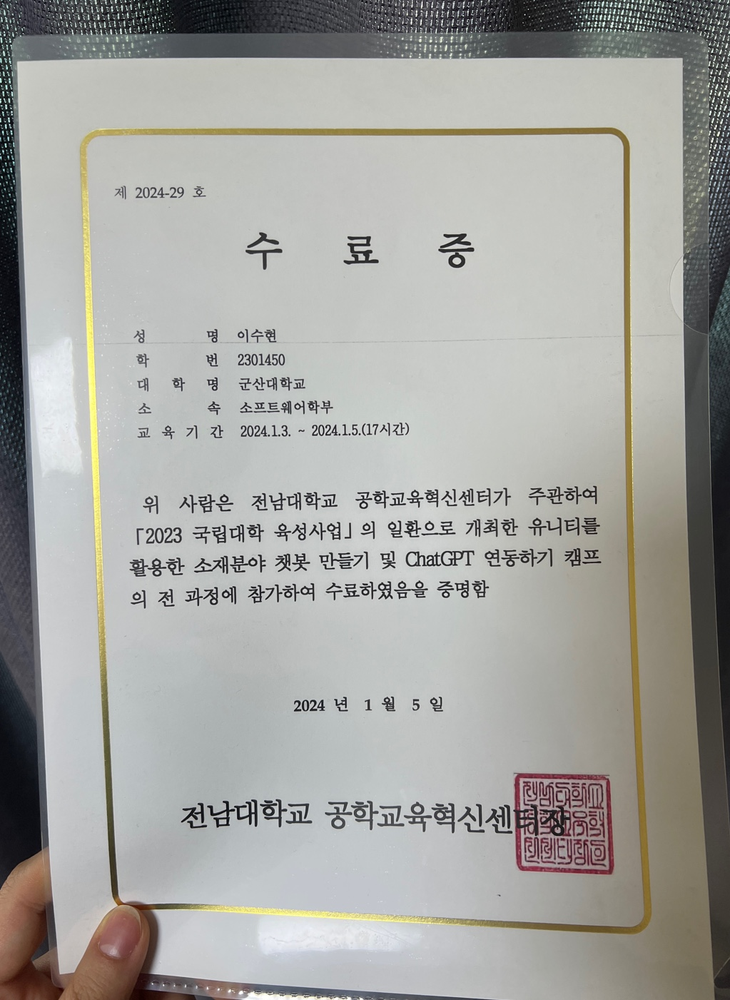

< 프로그램 후기 >
3일간 📌유니티를 활용한 챗봇 만들기 및 ChatGPT 연동하기 캠프📌를 진행하며,
✨유니티와 ChatGPT에 대한 이해도✨를 높일 수 있었다.
혼자 스스로 스크립트를 짜거나 과제같은 것은 없어서 수업 진행에 있어선 수월했다.
중간중간 많이 졸기도 했고, 수업을 놓치기도 했지만,😴
😋친구와 서로 돕고 강사님께 질문하면 친절히 알려주셔서 잘 따라갈 수 있었다.
수업 외에도 친구와 ✨재밌는 추억✨을 쌓을 수 있어서 좋은 시간이었다.🥰
다음에도 이런 교육 프로그램 참여 기회가 생긴다면 무조건 참여할 것이다.